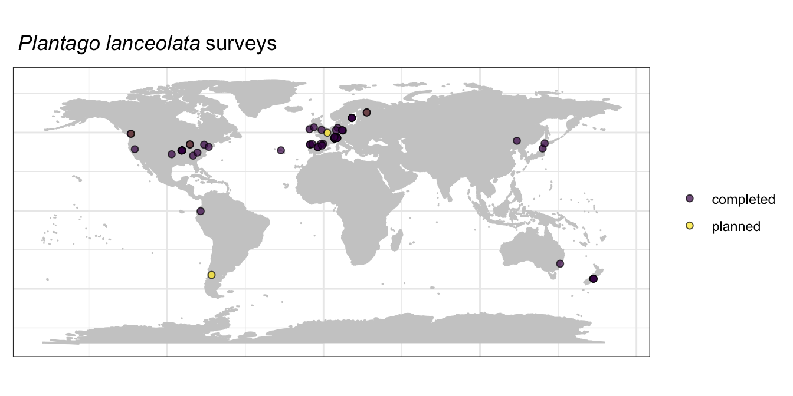

Sampling coordination
We are coordinating a global effort to survey herbivory on three focal plant species and on a diversity of species in five focal plant families: Apocynaceae, Asteraceae, Fabaceae, Rubiaceae, and Solanaceae. This page summarizes the surveys we have completed as well as surveys our members have plans to survey. This page represents a work in progress, and this information is primarily to help network members pick species and sites to survey.
Sampling within focal species
We have three focal species that we are aiming to sampling across the broadest possible geographic extent and across broad environmental gradients. These are Taraxacum officinale, Plantago major, and Plantago lanceolata. Below are maps of the locations of completed and planned surveys for each focal species. Any survey of one of these focal species will be useful to the project, but surveys in new locations, ecosystems, elevations, etc. will be especially useful.



Sampling within plant families
Below you will find maps, figures, and tables summarizing completed and planned surveys of species within each of our five focal families.
Apocynaceae

Sites with completed and planned surveys of species in the Apocynaceae

Number of species with completed or planned surveys in this focal family
| Plant family | Plant species | No. surveys |
|---|---|---|
| Apocynaceae | Apocynum androsaemifolium | 1 |
| Apocynaceae | Apocynum cannabinum | 2 |
| Apocynaceae | Asclepias cryptoceras | 1 |
| Apocynaceae | Asclepias curassavica | 1 |
| Apocynaceae | Asclepias incarnata | 1 |
| Apocynaceae | Asclepias speciosa | 1 |
| Apocynaceae | Asclepias syriaca | 4 |
| Apocynaceae | Asclepias tuberosa | 1 |
| Apocynaceae | Calotropis procera | 2 |
| Apocynaceae | Gomphocarpus fructicosus | 1 |
| Apocynaceae | Landolphia dulcis | 1 |
| Apocynaceae | Vincetoxicum hirundinaria | 1 |
Asteraceae

Sites with completed and planned surveys of species in the Asteraceae

Number of species with completed or planned surveys in this focal family
| Plant family | Plant species | No. surveys |
|---|---|---|
| Asteraceae | Achillea ptarmica | 1 |
| Asteraceae | Ageratina altissima | 3 |
| Asteraceae | Ageratina havanensis | 1 |
| Asteraceae | Ageratum conyzoides | 1 |
| Asteraceae | Ageratum fastigiatum | 1 |
| Asteraceae | Anthemis galilae | 1 |
| Asteraceae | Arctium minus | 2 |
| Asteraceae | Artemisia mongolica | 1 |
| Asteraceae | Baccharis dracunculifolia | 1 |
| Asteraceae | Baccharis serrulata | 1 |
| Asteraceae | Balsamorhiza sagittata | 3 |
| Asteraceae | Bidens frondosa | 1 |
| Asteraceae | Bidens reptans | 1 |
| Asteraceae | Celmisia discolor | 1 |
| Asteraceae | Celmisia spectabilis | 1 |
| Asteraceae | Centaurea stoebe | 1 |
| Asteraceae | Chromolaena odorata | 2 |
| Asteraceae | Cirsium arvense | 1 |
| Asteraceae | Conoclinium coelestinum | 1 |
| Asteraceae | Echinacea purpurea | 5 |
| Asteraceae | Emilia praetermissa | 1 |
| Asteraceae | Encelia canescens | 1 |
| Asteraceae | Erigeron glacialis | 2 |
| Asteraceae | Erigeron strigosus | 1 |
| Asteraceae | Eurybia macrophylla | 1 |
| Asteraceae | Flourensia thurifera | 1 |
| Asteraceae | Grindelia squarrosa | 3 |
| Asteraceae | Helianthella quinquenervis | 3 |
| Asteraceae | Helianthus annuus | 2 |
| Asteraceae | Heterotheca subaxillaris | 1 |
| Asteraceae | Hieracium pilosella | 3 |
| Asteraceae | Hypochaeris chillensis | 1 |
| Asteraceae | Hypochaeris radicata | 2 |
| Asteraceae | Ixeridium dentatum | 1 |
| Asteraceae | Jacobaea vulgaris | 1 |
| Asteraceae | Jessea multivenia | 1 |
| Asteraceae | Jungia ferruginea | 1 |
| Asteraceae | Kalimeris integrifolia | 1 |
| Asteraceae | Lactuca sibirica | 1 |
| Asteraceae | Leucanthemum vulgare | 1 |
| Asteraceae | Maianthemum racemosum | 1 |
| Asteraceae | Melanthera scandens | 1 |
| Asteraceae | Munnozia pinnatipartita | 1 |
| Asteraceae | Olearia paniculata | 1 |
| Asteraceae | Proustia cuneifolia | 1 |
| Asteraceae | Pulicaria dysenterica | 1 |
| Asteraceae | Raoulia eximia | 1 |
| Asteraceae | Ratibida pinnata | 1 |
| Asteraceae | Rudbeckia hirta | 3 |
| Asteraceae | Rudbeckia laciniata | 1 |
| Asteraceae | Rudbeckia triloba | 1 |
| Asteraceae | Senecio brunonianus | 1 |
| Asteraceae | Senecio crassulus | 1 |
| Asteraceae | Senecio elegans | 1 |
| Asteraceae | Senecio madagascariensis | 1 |
| Asteraceae | Solidago altissima | 6 |
| Asteraceae | Solidago canadensis | 1 |
| Asteraceae | Solidago canadensis/altissima | 1 |
| Asteraceae | Solidago missouriensis | 1 |
| Asteraceae | Solidago simplex | 1 |
| Asteraceae | Solidago speciosa | 1 |
| Asteraceae | Solidago virgaurea | 1 |
| Asteraceae | Symphyotrichum novae-angliae | 1 |
| Asteraceae | Symphyotrichum novi-belgii | 1 |
| Asteraceae | Taraxacum mongolicum | 1 |
| Asteraceae | Taraxacum officinale | 37 |
| Asteraceae | Tragopogon dubius | 1 |
| Asteraceae | Tussilago farfara | 1 |
| Asteraceae | Verbesina encelioides | 1 |
| Asteraceae | Vernonia baldwinii | 1 |
| Asteraceae | Vernonia gigantea | 1 |
| Asteraceae | Wyethia mollis | 2 |
Fabaceae

Sites with completed and planned surveys of species in the Fabaceae

Number of species with completed or planned surveys in this focal family
| Plant family | Plant species | No. surveys |
|---|---|---|
| Fabaceae | Acacia dealbata | 1 |
| Fabaceae | Acacia implexa | 1 |
| Fabaceae | Acacia longifolia | 1 |
| Fabaceae | Acacia suaveolens | 1 |
| Fabaceae | Acmispon wrangelianus | 1 |
| Fabaceae | Adesmia boronioides | 1 |
| Fabaceae | Aotus genistoides | 1 |
| Fabaceae | Astragalus alpinus | 2 |
| Fabaceae | Bauhinia racemosa | 1 |
| Fabaceae | Cercis canadensis | 1 |
| Fabaceae | Chamaecrista fasciculata | 1 |
| Fabaceae | Crotalaria juncea | 1 |
| Fabaceae | Crotalaria pallida | 1 |
| Fabaceae | Crotalaria vitellina | 1 |
| Fabaceae | Dalbergia miscolobium | 1 |
| Fabaceae | Desmodium gangeticum | 1 |
| Fabaceae | Desmodium glutinosum | 1 |
| Fabaceae | Desmodium incanum | 1 |
| Fabaceae | Desmodium podocarpum | 1 |
| Fabaceae | Desmodium procumbens | 1 |
| Fabaceae | Glycine max | 1 |
| Fabaceae | Indigofera hirsuta | 1 |
| Fabaceae | Lathyrus quinquenervius | 1 |
| Fabaceae | Latrobea pinnaculum | 1 |
| Fabaceae | Lespedeza pilosa | 1 |
| Fabaceae | Lupinus arboreus | 1 |
| Fabaceae | Lupinus argenteus | 1 |
| Fabaceae | Lupinus perennis | 4 |
| Fabaceae | Lupinus pilosus | 1 |
| Fabaceae | Lupinus polyphyllus | 1 |
| Fabaceae | Lupinus sericeus | 1 |
| Fabaceae | Medicago polymorpha | 1 |
| Fabaceae | Melilotus albus | 1 |
| Fabaceae | Mimosa albida | 1 |
| Fabaceae | Mimosa tenuiflora | 1 |
| Fabaceae | Montigena novae-zelandiae | 1 |
| Fabaceae | Phaseolus lunatus | 1 |
| Fabaceae | Prosopis velutina | 1 |
| Fabaceae | Senna cumingii | 1 |
| Fabaceae | Senna obtusifolia | 1 |
| Fabaceae | Senna occidentalis | 1 |
| Fabaceae | Trifolium pratense | 1 |
| Fabaceae | Trifolium repens | 2 |
| Fabaceae | Vicia sativa | 1 |
| Fabaceae | Vicia sepium | 1 |
| Fabaceae | Vicia villosa | 1 |
| Fabaceae | Wisteria floribunda | 1 |
Rubiaceae
Sites with completed and planned surveys of species in the Rubiaceae

Number of species with completed or planned surveys in this focal family
| Plant family | Plant species | No. surveys |
|---|---|---|
| Rubiaceae | Cephalanthus occidentalis | 1 |
| Rubiaceae | Coffea arabica | 1 |
| Rubiaceae | Coprosma lucida | 1 |
| Rubiaceae | Cordiera elliptica | 1 |
| Rubiaceae | Galium album | 1 |
| Rubiaceae | Galium circaezans | 1 |
| Rubiaceae | Kelloggia galioides | 1 |
| Rubiaceae | Mitchella repens | 1 |
| Rubiaceae | Morinda pubescens | 1 |
| Rubiaceae | Palicourea padifolia | 1 |
| Rubiaceae | Palicourea rigida | 1 |
| Rubiaceae | Palicourea sp | 1 |
| Rubiaceae | Psychotria aubletiana | 1 |
Solanaceae
Sites with completed and planned surveys of species in the Solanaceae
Number of species with completed or planned surveys in this focal family
| Plant family | Plant species | No. surveys |
|---|---|---|
| Apocynaceae | Apocynum androsaemifolium | 1 |
| Solanaceae | Datura wrightii | 1 |
| Solanaceae | Nicotiana attenuata | 2 |
| Solanaceae | Physalis heterophylla | 1 |
| Solanaceae | Physalis longifolia | 1 |
| Solanaceae | Salpichroa origanifolia | 1 |
| Solanaceae | Solanum carolinense | 3 |
| Solanaceae | Solanum cinereum | 1 |
| Solanaceae | Solanum donianum | 3 |
| Solanaceae | Solanum dulcamara | 1 |
| Solanaceae | Solanum elaeagnifolium | 2 |
| Solanaceae | Solanum incanum | 1 |
| Solanaceae | Solanum lycocarpum | 1 |
| Solanaceae | Solanum nigrum | 1 |
| Solanaceae | Solanum ptychanthum | 1 |
| Solanaceae | Solanum sp | 1 |
| Solanaceae | Solanum tridynamum | 3 |
Surveys of reproductive damage
This table lists species for which we currently have a completed or planned survey of reproductive damage (damage to flowers, fruits, or seeds).
| Plant family | Plant species | No. surveys |
|---|---|---|
| Acanthaceae | Ruellia nudiflora | 3 |
| Acanthaceae | Ruellia tuberosa | 1 |
| Asteraceae | Conoclinium coelestinum | 1 |
| Asteraceae | Encelia canescens | 1 |
| Asteraceae | Senecio brunonianus | 1 |
| Asteraceae | Vernonia gigantea | 1 |
| Boraginaceae | Heliotropium indicum | 1 |
| Cactaceae | Opuntia cespitosa | 1 |
| Campanulaceae | Lobelia polyphylla | 1 |
| Cistaceae | Cistus monspeliensis | 1 |
| Ericaceae | Erica multiflora | 1 |
| Fabaceae | Mimosa tenuiflora | 1 |
| Fabaceae | Senna cumingii | 1 |
| Fabaceae | Senna occidentalis | 1 |
| Lamiaceae | Rosmarinus officinalis | 1 |
| Malpighiaceae | Byrsonima intermedia | 1 |
| Malpighiaceae | Byrsonima verbascifolia | 1 |
| Oleaceae | Phillyrea angustifolia | 1 |
| Orchidaceae | Platanthera clavellata | 1 |
| Papaveraceae | Argemone mexicana | 1 |
| Papaveraceae | Sanguinaria canadensis | 1 |
| Plantaginaceae | Plantago lanceolata | 1 |
| Plantaginaceae | Plantago major | 1 |
| Poaceae | Zea mays | 1 |
| Polygonaceae | Rumex japonicus | 4 |
| Primulaceae | Lysimachia borealis | 1 |
| Proteaceae | Persoonia micranthera | 1 |
| Rubiaceae | Cordiera elliptica | 1 |
| Sarraceniaceae | Sarracenia purpurea | 1 |
| Solanaceae | Physalis heterophylla | 1 |
| Solanaceae | Solanum elaeagnifolium | 1 |